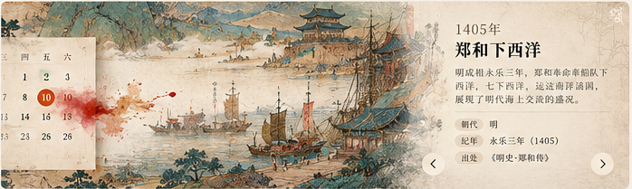
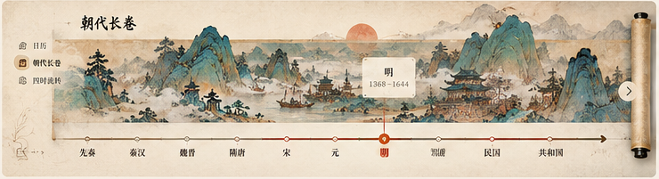
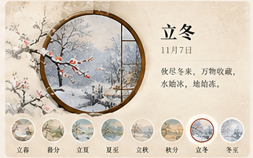
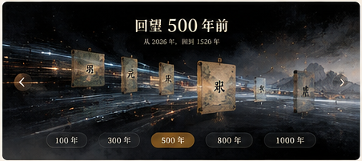
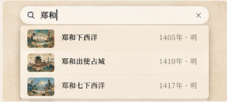
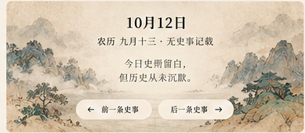
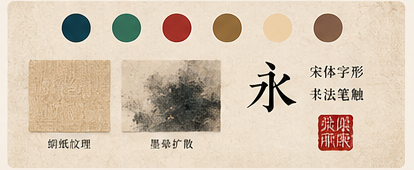

10 场景 · 视觉与交互审核手册
依据原始参考图分割。图像用于布局和美术氛围对照；动效以规格与运行视频验收，不可只凭静图判定。
本页面无外部依赖；勾选与说明存储在此浏览器本地，导出后可移交开发。
首页：画境自然苏醒视觉与交互
静景有生命，首屏无需等待
参考图上方左侧的大幅欢迎页，保留原构图。 · 查看图文审核卡
视觉结构
- 满幅青绿山水，标题居中、左侧三视图导航
- 小舟处在视觉焦点，搜索与主题入口可见
- 「向下探索」直接通往三视图入口
关键动效
- 船身轻摇 ±1.2°、上下浮动 ±3px，3.6–4.8s
- 云雾低速漂移 16–28s，船尾水纹轻扩散
- 暂停或减少动态后，静态画面仍完整
通过标准
- 初次打开有静态首帧、无白屏；3 秒内认出主题
- 三个入口及探索按钮都可点，背景动画不挡操作
- 无船背景 + 透明小舟，不能出现“重影双船”
勾选验收项
结论
翻日历：纸张有生命视觉与交互
翻页清晰，不阻碍选日
参考图编号 2：月历纸页 + 翻页卷角。 · 查看图文审核卡
视觉结构
- 42 格月历与公农历文字完整可读
- 选中日使用朱砂强调；有史日与农历纪事标识区分
- 页角卷起与纸张阴影体现“翻页”
关键动效
- 切月轻翻 260–350ms，方向与操作一致
- 点日格即时高亮，右侧档案随选日同步变化
- 连点换月不排队播放动画；今天键可立即回跳
通过标准
- 闰年、跨月及月初月末 42 格正确
- 农历节令不固定绑定公历日，除夕按年计算
- 日历操作后页面不意外滚至顶部
勾选验收项
结论
点史事：由字入画视觉与交互
核心高光：朱砂墨晕 → 史事画卷

参考图编号 3：画面左侧历史场景、右侧郑和事件文字。 · 查看图文审核卡
视觉结构
- 事件主题画铺开；画卷右侧或留白区承载正文
- 纪年、标题、描述、出处四级文字明确
- 前后史事按钮与关闭入口始终可发现
关键动效
- 点击反馈 0–120ms；墨晕自点击点扩张 80–500ms
- 主画 200–650ms 渐显；文字至约 800ms 错峰落定
- 后续事件轻量切换，关闭恢复来源位置与焦点
通过标准
- 图片慢/失败均有线描兜底，不能闪黑屏
- 画题符合事件语义；画作标注“艺术意象非实录”
- Esc/关闭按钮/移动返回均有效且可打断动画
勾选验收项
结论
朝代长卷：横向展卷视觉与交互
时间轴与山水画同步延伸

参考图编号 4：横向长卷画面 + 底部朝代轴。 · 查看图文审核卡
视觉结构
- 14 时期横向展开，主画和下方时间轴呼应
- 当前朝代、年代范围及史事节点有明确高亮
- 两端卷轴与章节衔接有“长卷”质感
关键动效
- 鼠标拖动、左右箭头、触摸横滑均可切换
- 定位朝代 350–600ms；长距离跳转快速落点
- 打开史事关闭后仍在原朝代、原横向位置
通过标准
- 14 时期、92 条长卷事件均能访问
- 网页纵向滚轮不被卷轴强行劫持
- 仅有年份的史事不伪装成有确切月日
勾选验收项
结论
四时流转：节气物象视觉与交互
圆窗为画，节气为序

参考图编号 5：圆窗冬景、节气说明及底部缩略节点。 · 查看图文审核卡
视觉结构
- 圆窗主画占主要视觉空间，旁侧显示节气文字
- 下方节气/月份入口可点并显示当前选择
- 同季节保留主画风格，通过物象表达差异
关键动效
- 节气切换 300–600ms 柔和交叉淡变
- 跨季替换春夏秋冬主画；同季优先变物象和文案
- 进入时按真实交节时间定位当前节气
通过标准
- 24 节气全部可用，文案与图像一致
- 农历节日不误作“节气”；手机圆窗不越界
- 关闭动效后仍可完整查看四季与文字
勾选验收项
结论
千年回望：时间快速回溯视觉与交互
从某个年份，跃入对应的时代

参考图编号 6：深色时间场、年代牌、底部五档。 · 查看图文审核卡
视觉结构
- 深墨底色、金色时间刻度；中部强调目标朝代
- 100/300/500/800/1000 年五档明显可选
- 回望基准年、目标年和朝代归属同时展示
关键动效
- 选择档位后数字快速回溯，约 450–700ms
- 过渡完成定位到对应长卷时期，不死等动画
- 允许返回、Esc 或减少动态直接结束
通过标准
- 年份按当前选中日期而非固定“今年”计算
- 例如 2026 回望 500 年为 1526 → 明
- 历史纪年无公元 0 年；不伪造“同月同日史事”
勾选验收项
结论
搜索：多维度检索视觉与交互
快速找到人、事、年、朝代与出处

参考图编号 7：搜索“郑和”的三条示意结果。 · 查看图文审核卡
视觉结构
- 顶部搜索框，下方纵向结果列表
- 每条结果包含标题、年份/朝代与缩略图
- 候选结果在浅绢纸弹层中清晰分隔
关键动效
- 输入结果 150–220ms 轻出现，不逐条飞入
- ↑↓ 高亮、Enter 前往、Esc 关闭
- 正在使用中文输入法时不抢占 Enter
通过标准
- “郑和”“1405”“永乐”“赤壁”能命中预期
- 公历 / 农历 / 长卷来源清楚区分
- 无结果、无关键词和 320px 宽度均可用
勾选验收项
结论
空白日引导：留白仍可探索视觉与交互
没记载的日期，也有值得停留的画面

参考图编号 8：10 月 12 日淡山水空态及双向引导。 · 查看图文审核卡
视觉结构
- 空态沿用淡山水背景与克制的二行文字
- 日期和农历仍完整显示，不留空白大框
- 前后两条“有史日”导航明显且可点击
关键动效
- 点上一有史日/下一有史日直接切换日期
- 不播放不必要的全屏动画或假内容加载
- 跨月/跨年寻找真实有记录日
通过标准
- 示例空日 10-12 / 10-24 不伪造事件
- 不得写成“今天历史上没有发生过事”
- 左右按钮有明确目标日期并正确定位
勾选验收项
结论
移动端体验：单手也能翻视觉与交互
保留主体验，而非压缩桌面版
参考图编号 9：手机内的日历与史事内容。 · 查看图文审核卡
视觉结构
- 窄屏单列：导航、日期、月历、当日事件顺序清晰
- 标题、日期、事件卡在一屏内形成主要信息层
- 顶部菜单、搜索、主题切换不互相挤压
关键动效
- 长卷横滑仅在自身区域响应
- 史事打开后上图下文，关闭可被单手触达
- 低端设备自动降级复杂雾层与重叠效果
通过标准
- 320px 与 390px 宽度无横向溢出
- 42 格可点且不误触，字体和对比度可读
- 软键盘、浏览器返回、底部安全区均正常
勾选验收项
结论
整体视觉风格：中式设计语言视觉与交互
绢纸 · 青绿山水 · 宋体 · 朱砂

参考图编号 10：配色、纹理、文字和朱印规范。 · 查看图文审核卡
视觉结构
- 绢纸底与纸张颗粒统一，青绿作为山水基色
- 朱砂只强调选中、事件落点与印章，不泛滥
- 正文宋体可读；书法字只用于品牌或强调
关键动效
- 全站共用时长和缓动 token，不各自为政
- 日历纵向翻、长卷横向展、节气圆环切
- 亮暗主题都保留纹理和足够的文字对比
通过标准
- 正文对比度目标 ≥ 4.5:1；信息字避免 9.5px
- 不得增加无功能的大量装饰层
- 无外部 CDN、字体或运行时 API 依赖
勾选验收项
结论